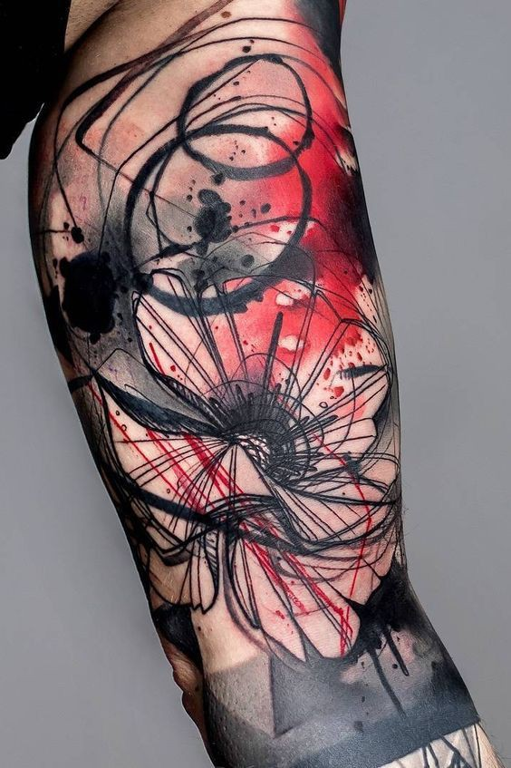
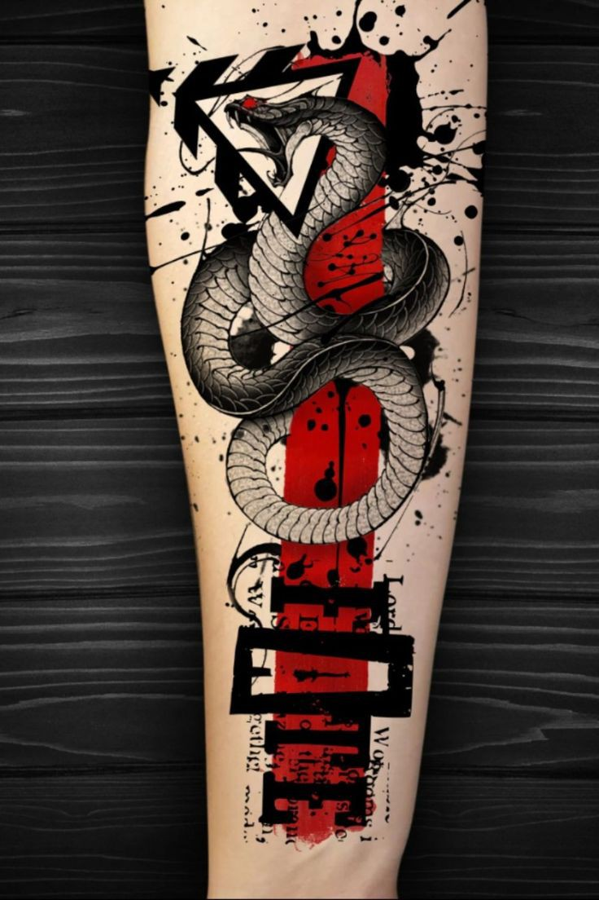
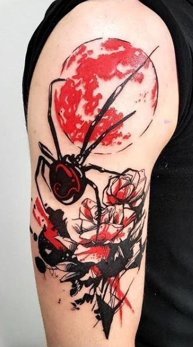
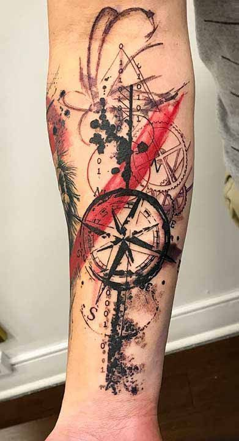
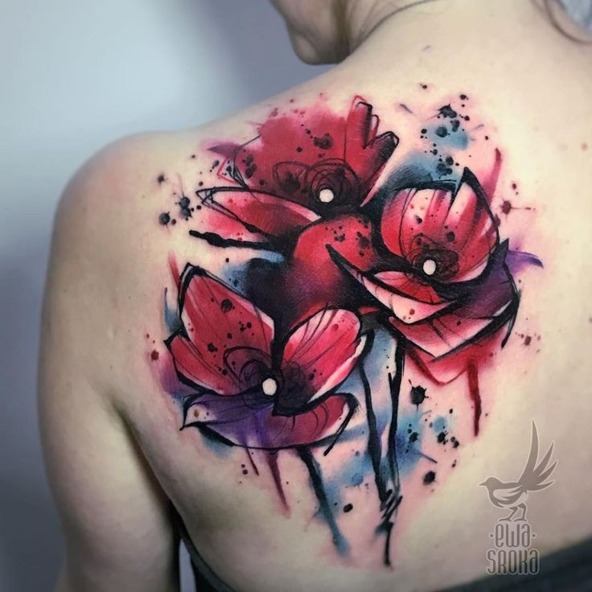

Traditional tattoos
About traditional tattoos
- Traditional tattoos are also referred to as Western, American or Old School.
- They are mainly characterized by vivid colors, black outlines and minimal shading.
- The traditional tattoo has an iconic style brought out by its characteristics, making it iconic and bold.
- The traditional tattoo style first entered American culture in the 1930s.
- They were used as a symbol representing rebellion against the “mainstream society” box.
- Sailor Jerry, whose official name was Norman Collins, was the pioneer of this tattoo style in Hawaii during World War 2.
Common Imagery for the Traditional Tattoo Style
- roses
- women
- skulls
- daggers
- wolves
- ships




